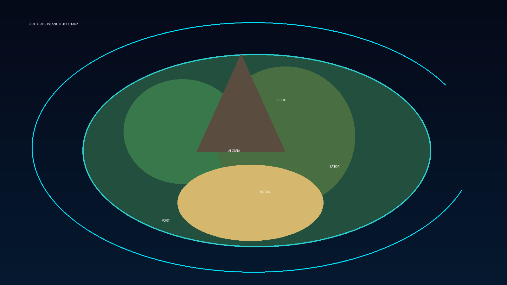

HOLOGRAPHIC MAP
Blacklace Island
Carte locale branchée sur assets/img/island-map.png. Les points deviendront les accès vivants de l’île.

HOLOGRAPHIC MAP
Carte locale branchée sur assets/img/island-map.png. Les points deviendront les accès vivants de l’île.
